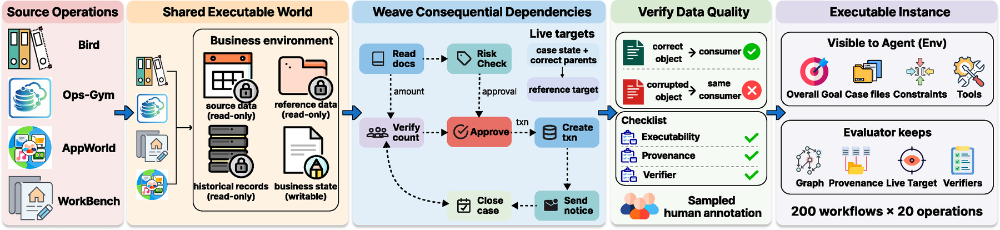

Agents can already do the steps. The question is whether they can carry each result, record, and state change into the operations that depend on it, across systems, twenty steps deep. EnterpriseWorld makes those dependencies explicit, verified, and controllable, and measures where execution breaks.
In a payment workflow, a computed amount must inform the approval, the approval must authorize the payment, and reconciliation must use the transaction record that payment created. Existing benchmarks capture long, stateful tasks, but rarely make these dependencies explicit, verified, and controllable. EnterpriseWorld is built from familiar source tasks (BIRD, Spider 2.0, EnterpriseOps-Gym, WorkBench, AppWorld) woven into shared cases where every edge is a real field-level handoff that an incorrect upstream result demonstrably breaks.
Enterprise operations keep their original data and judging semantics; 7 of 20 checks per workflow are inherited byte for byte from the source dataset.
Results produced early resurface many steps later, and several must hold at once. 36% of edges span five or more steps; 24% span ten or more.
Matched variants deepen a required path or add prerequisites while the business setting stays fixed, so structure itself is the treatment.
Executable checks judge each operation and each dependency; replacing a correct upstream result with a wrong one must flip the downstream check.

This is a real workflow from the benchmark, a balance-transfer request, and a real run by a frontier model under the plan-level condition. Each box is an operation; each line is a verified dependency (dashed amber lines span five steps or more). Press play to watch the run: the agent adds a status filter the reference book never asked for, the uplift becomes 3 instead of 65, and every downstream action is the other branch's action. Click any operation to read what happened there.
Process the cardholder's balance-transfer request: the new promo-APR line pays off the high-APR source card. Plan and carry the engagement out end to end from the case files and the live records; the desk's standing policies arrive as notes the first time you touch the records they govern.
Because every workflow is executable, its dependency graph can be edited and re-validated. Two operators change the topology; two add distractors while the required graph stays fixed. Pick an operator to see what it does to an excerpt of the workflow above, and how often it breaks a run that succeeded on the base workflow.
Five frontier models, one harness, one attempt per workflow. Every cell is judged by executable checks on the saved final state: a workflow counts as complete only when the case-closing operation and all of its required ancestors pass. The analysis follows four questions.
From depth 3 to the full workflow, completion drops by 32 to 46 points for every model; the degradation is already visible by depth 10 and continues to full completion.
GPT-6 Astra finishes 46.5% of workflows with 12.9k output tokens; Gemini 3.7 Flash produces 30.7k tokens and reaches 30.0%. Relative to peers at the same depth, the accurate models are also the cheaper ones.
Handing over the correct upstream object raises completion by up to 29.5 points; exposing the dependency structure alone gives 7 to 14. Knowing which operations depend on one another is not the bottleneck; producing and carrying the result is.
The full procedure adds 20 to 26.5 points for four models and nothing for GPT-6 Astra (46.5 to 46.0), which instead gains most from help with dependency execution.
Across settings, 14.0 to 25.6% of previously successful workflows fail after the perturbation; deepening the path by three relays breaks the most.
Path deepening raises output by 0.8k to 1.8k tokens and 2 to 9 tool calls per run; distractor branches and decoy tools change effort hardly at all, yet still break 18.6% and 20.9% of successful runs.
At depth 12, own-check accuracy is still 59 to 81%, but only 32 to 56% of workflows keep a fully valid chain. A chain survives only if every operation on it passes, so the gap widens with depth even without cascades.
Scored directly they trail state-insensitive operations by up to 10 points; once prerequisites are correct the gap is within 2 points for three models and reverses for two. 50 to 68% of failed state-sensitive operations originate in an incorrect upstream result.
Observed survival runs at or slightly above the independent-failure baseline for most depths and converges with it at the deepest levels: the runs that fail tend to fail several operations at once, and most lost edges are lost at the producer (8 to 29%), not at the handoff (4 to 6%).
@inproceedings{liu2027enterpriseworld,
title = {EnterpriseWorld: A Realistic World for Enterprise Long-Horizon Agents},
author = {Liu, Hongjun and Pang, Bo and Ming, Yifei and Koul, Anurag and Pakhomov, Egor and Zhao, Chen and Joty, Shafiq and Nijkamp, Erik},
booktitle = {Under review},
year = {2027}
}